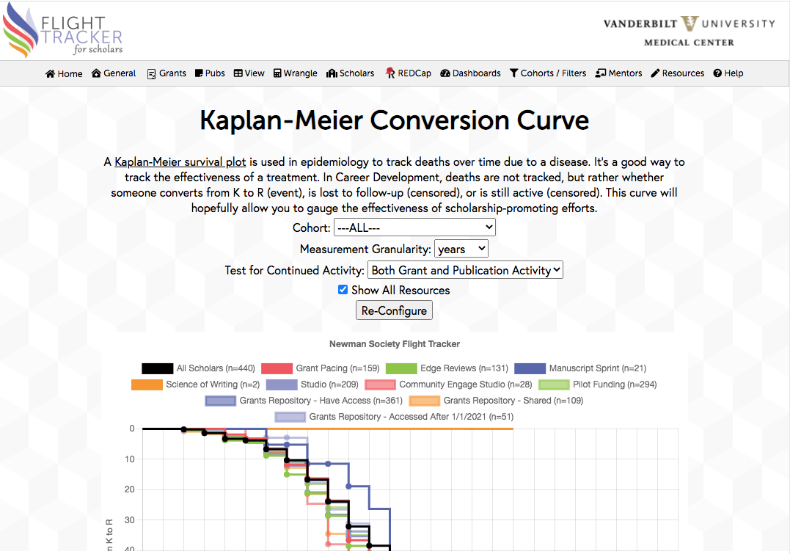

A Kaplan-Meier Curve is based off of survival curves that were developed to show the survival rates of cancer patients, particularly testing specific treatments. Many fields have adapted them for their own purposes, and Flight Tracker seeks to achieve such for Career Development.

Any Kaplan-Meier Curve tracks the survival rate over time. Each person’s data is transformed based on her/his start date in the study. The line moves vertically when an “event” occurs. Originally, the event was death, but for Flight Tracker, the event is a good thing – when someone converts from a training grant (K) to an R-class grant. The dots (called “censored” in the data table) on the curve indicate when someone is lost to follow-up or stops publishing or grant activity without an event. For Flight Tracker, the survival curve’s y-axis is flipped from the traditional survival curve.
You can configure your graph to your own desires. Of note, you can compare the effectiveness of your various resources to your general scholars. If a resource helps the rate, its curve should be down and to-the-right of the black curve. Because of small sample sizes, this may not be true in 100% of the cases, but if your resources are helping your scholars, it should be true in the main.